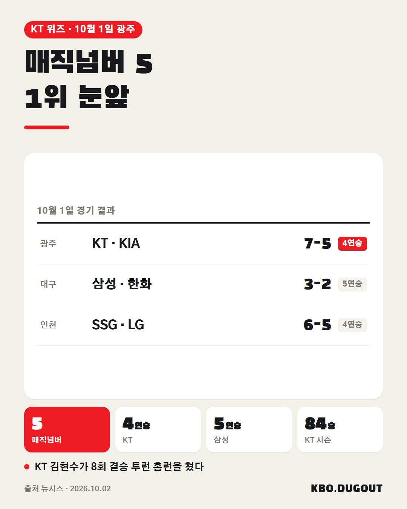
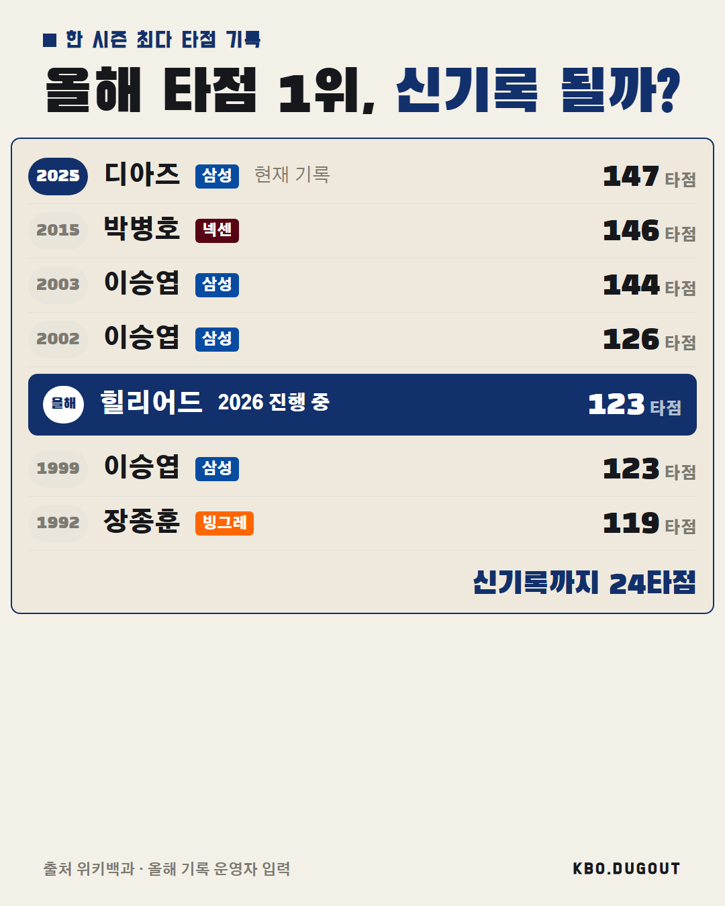

KT, KIA전 3연전 싹쓸이로 4연승. 정규시즌 1위 매직넘버 5 삼성도 한화 꺾고 5연승 순위 추격
QA 없음
KT, KIA전 3연전 싹쓸이로 4연승. 정규시즌 1위 매직넘버 5 삼성도 한화 꺾고 5연승 순위 추격
QA 없음

KT가 광주 원정에서 KIA를 7-5로 꺾고 3연전 싹쓸이, 4연승을 달리며 정규시즌 1위 매직넘버를 5로 줄였습니다. 같은 날 삼성도 한화를 잡고 5연승을 이어가며 맹추격 중입니다. 올 시즌 1위는 어느 팀 몫일까요? #KBO #프로야구 #야구 #오원석 #KT위즈
QA 출처에 없는 이름
5회초 솔로포로 홈런 공동 선두. 9월 한 달 10개, 시즌 타점 127개.
QA 없음

현재 타점 1위 힐리어드, 신기록까지 24타점. 신기록 깰 수 있을까? 출처: 위키백과 (위키백과 CC BY-SA) · 올해 기록 운영자 입력
QA 없음

현재 홈런 1위 힐리어드·김도영, 역대 공동 22위. 역대 몇 위까지 갈 수 있을까? 출처: 위키백과·언론 보도 (위키백과 CC BY-SA) · 올해 기록 기사 10.2
QA 없음

구자욱 0.371, 지금 추세면 역대 9위라는데 역대 몇 위까지 갈 수 있을까? 출처: 위키백과 (위키백과 CC BY-SA) · 올해 기록 기사 10.1
QA 없음